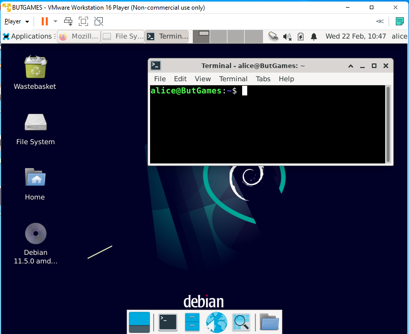

Process
1- Choix des caractéristiques techniques et de l'OS
2- Installation de la VM, vscode et git
3- Notice d'utilisation


Compétences acquises
1- Meilleur maîtrise du langage bash
2- Gestion d'un projet sur plusieurs semaines
3- Travail et organisation en binôme
4- Installation d'une VM et d'un OS